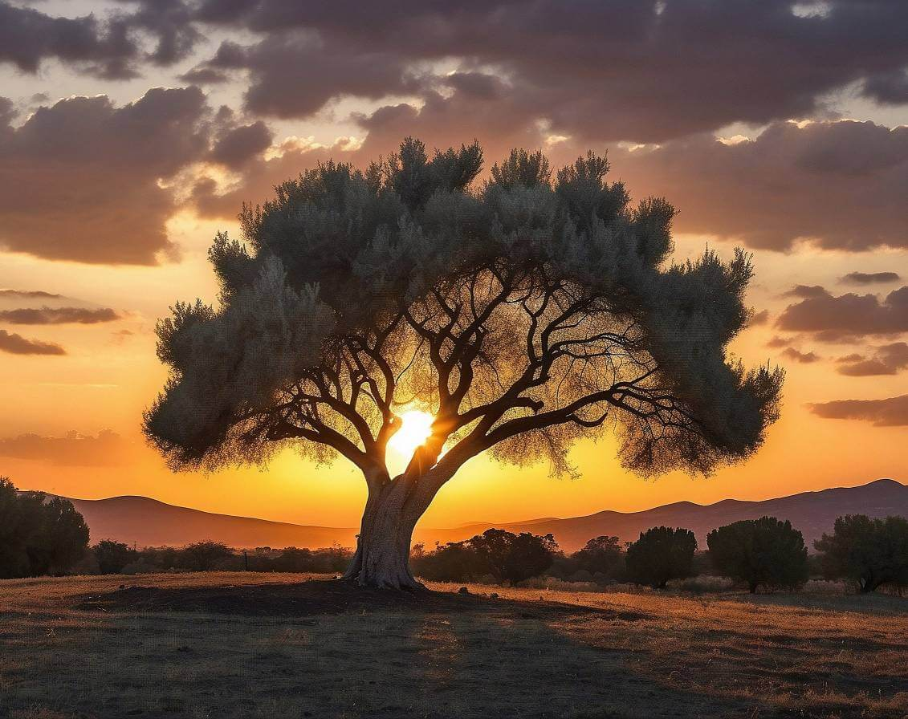

What is Olea Europaea? The Anatomy of the Perfect Greek Olive Tree
Behind every premium Kalamata and green olive is a botanical marvel. Explore the resilient Mediterranean tree that produces nature's ultimate superfood.
When you open a jar of Kalantzis Foods olives, you are experiencing the final stage of a botanical journey that begins with a remarkable tree. While there are hundreds of tree species in the world, only one is responsible for the cornerstone of the Mediterranean diet.
Understanding the Olea Europaea
What is Olea Europaea? Olea Europaea (meaning "European olive") is the botanical name for the traditional olive tree native to the Mediterranean basin. Renowned for its extreme longevity and drought resistance, this evergreen species produces stone fruits (olives) that are uniquely rich in monounsaturated fats, phenolic compounds, and essential antioxidants.
These trees are legendary survivors. Some specimens in Greece are over 2,000 years old and still bearing fruit today. Their ability to thrive in harsh, rocky soil with minimal water is exactly what forces the tree to push intense flavor and dense nutrients directly into its fruit.
The Anatomy of a Superfood: From Root to Fruit
Every part of the Olea Europaea has adapted to create the perfect environment for growing high-phenolic olives.
- The Root System
- Olive trees develop an expansive, shallow root system capable of capturing the slightest rainfall, combined with deep anchor roots that extract rare minerals from the rocky Greek subsoil. This mineral uptake contributes directly to the olive's complex flavor.
- The Silvery Leaves
- The leaves feature a silvery underside covered in microscopic scales (trichomes). This botanical armor reflects harsh Mediterranean sunlight and traps moisture, allowing the tree to survive severe droughts while continuing to nourish its fruit.
- The Drupe (The Olive)
- Botanically, an olive is a "drupe" (a stone fruit like a peach or cherry). When allowed to ripen naturally on the branch—as we do at Kalantzis Foods—the drupe develops maximum levels of oleuropein and healthy lipids before it is carefully hand-harvested.
Why the Astakos Microclimate Matters
While Olea Europaea can grow in many places, it only achieves its highest potential in very specific environments. At Lazaros Kalantzis Foods, our trees are cultivated in the region of Astakos, Greece.
The constant Ionian sea breezes prevent humidity buildup (which keeps the trees naturally disease-free without harsh pesticides), while the intense Greek sun maximizes the synthesis of polyphenols within the fruit. The combination of this specific botanical species and our unique terroir is a recipe that cannot be replicated in industrial farming.
Taste the Fruit of the Olea Europaea
Experience the pure, unadulterated flavor of olives grown exactly as nature intended in the Astakos terroir.
Shop Our Natural Harvest